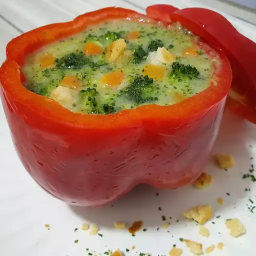

Best Cream of Broccoli Soup

Description
This broccoli soup recipe is thick and flavorful. It is simple, delicious, and quick to make. Enjoy (I know you will).
Ingredients
- Butter
- Onions and Celery
- Broth
- Broccoli
- Flour, Milk, and Butter
- Pepper
Steps
- Cook the Vegetables
- Blend the Ingredients
- Thicken the Soup